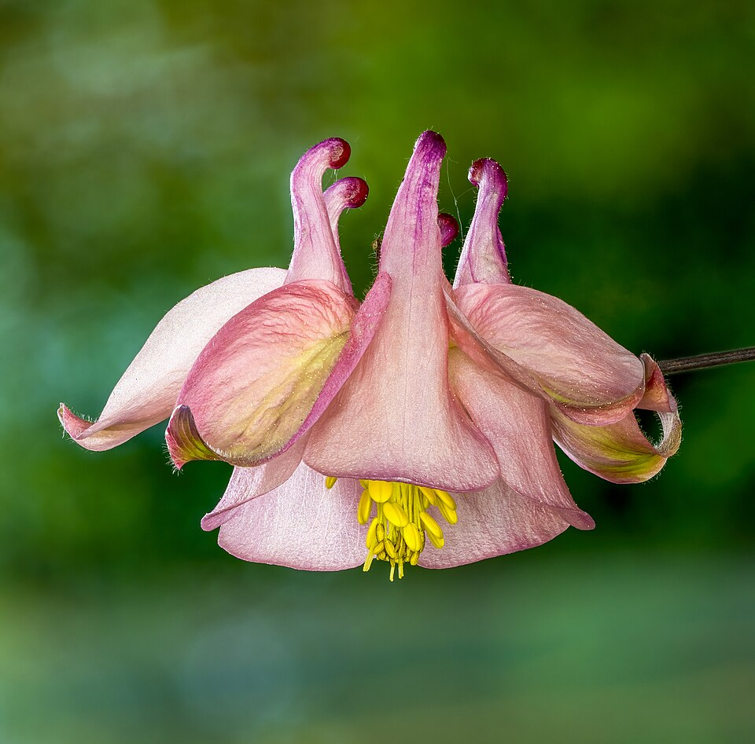

Columbine Aquilegia
Aquilegia

Delicate perennial with distinctive spurred flowers in blue, purple, pink, white, or bicolor combinations above graceful blue-green divided foliage. The nodding blooms appear in late spring to early summer and are perfectly designed to attract hummingbirds and long-tongued bees. Short-lived but readily self-seeds, creating naturalized colonies in woodland gardens and shaded areas.
Columbine (Aquilegia) is a short-lived perennial in the buttercup family (Ranunculaceae) prized for its uniquely spurred, nodding flowers that attract hummingbirds, bees, and butterflies in late spring to early summer. It self-seeds freely, naturalizing in woodland and shade gardens with minimal maintenance once established.
More info: Wikipedia: Aquilegia
At a glance
- Sun
- partial shade (full sun with enough water)
- Soil
- evenly moist, average, well-drained, slightly acid to neutral; not wet or poorly drained
- Water
- even moisture
- Blooms
- late spring; up to about 6 weeks with deadheading
- Species
- Aquilegia
- Also known as
- Columbine, Aquilegia
Care
Summarized from the sources listed below (web research, 2026-11-02). Where sources disagree, the page says so.
What helps it thrive
Evenly moist soil in partial shade, though full sun works with enough water. Intolerant of wet, poorly drained soil. Plants are fairly short-lived (2-3 years) but spread by seed.
Growing season
Blooms in late spring, extended to as long as six weeks with diligent deadheading.
Fall tasks
Cut the foliage back and remove it from the garden, which helps discourage overwintering pests. After the ground freezes, mulch to prevent frost heaving.
Propagation
Seed is the usual route: sow outdoors in fall for natural cold treatment, or start indoors after 6-8 weeks of cold moist stratification. Seedlings flower in their second year, and seed from open-pollinated plants will not come true.
Dividing
Not recommended. Old clumps can be divided but the results are often disappointing, and the plant is slow to recover; if you try, divide large plants in spring. Moving a plant is easier: lift it with plenty of soil and water well.
Research notes
Researched 2026-08-06.
Research (May 12, 2026)
Columbine belongs to the buttercup family (Ranunculaceae) and encompasses approximately 70 species native to mountainous areas of the Northern Hemisphere. The genus name Aquilegia derives from the Latin word for eagle, referencing the flower's distinctive spurs that resemble an eagle's talons. These specialized spurs contain nectar and have co-evolved with specific pollinators, particularly hummingbirds and long-tongued bees, creating a fascinating example of evolutionary adaptation. The flowers' unique structure, with five petals each bearing a hollow spur, makes them instantly recognizable and highly valued by gardeners seeking to attract wildlife.
While individual plants typically live only 2-3 years, columbines compensate for their brief lifespan through prolific self-seeding, often hybridizing freely between species and cultivars to create new color combinations and forms. This reproductive strategy allows them to establish sustainable populations in woodland gardens, rock gardens, and naturalized areas where they thrive in partial shade and well-drained soil. The deeply divided, blue-green foliage provides attractive texture throughout the growing season, even after the blooming period ends. Modern breeding has produced numerous cultivars with extended color ranges, larger flowers, and improved garden performance, though many gardeners prefer the charm and natural adaptability of native species for creating authentic wildflower gardens.
---
Research (Aug 5, 2026)
Columbine belongs to the buttercup family (Ranunculaceae) and encompasses approximately 70 species native to mountainous regions of the Northern Hemisphere. The genus name Aquilegia derives from the Latin word for eagle, referencing the flower's distinctive hollow spurs that resemble an eagle's talons. These spurs contain nectar and have co-evolved with specific pollinators — hummingbirds, hawkmoths, and long-tongued bees — in a classic example of mutualistic specialization. Flowers appear in a wide range of colors including blue, purple, pink, white, red, and bicolor combinations, with modern hybrid cultivars such as 'McKana Giants' and the 'Songbird' series offering particularly large, showy blooms.
Columbines are considered short-lived perennials, typically persisting 3–4 years before declining, but they compensate by self-seeding prolifically. They are excellent candidates for naturalized woodland gardens, cottage gardens, and partially shaded borders. All parts of the plant are toxic if ingested, containing cyanogenic glycosides and isoquinoline alkaloids, so caution is advised around children and pets. Columbines are also susceptible to leaf miners (Phytomyza aquilegiae), which cause distinctive serpentine trails in the foliage but rarely threaten the plant's overall health.
For best results, plant columbine in a location with morning sun and afternoon shade, particularly in warmer climates. Well-drained, humus-rich soil is ideal. Deadheading spent blooms prolongs flowering but prevents self-seeding; gardeners wishing to naturalize colonies should allow some seed heads to mature and drop. Cutting foliage back after bloom often encourages a fresh flush of attractive blue-green leaves. Native North American species such as Aquilegia canadensis (Eastern red columbine) are especially valuable for supporting native pollinators and are highly adaptable to garden conditions.
Sources
Earlier sources
- Aquilegia - Wikipedia
- Columbine - Missouri Botanical Garden
- Growing Columbines - University of Minnesota Extension — †
- Native Columbines - Lady Bird Johnson Wildflower Center
- Aquilegia (Columbine) - Missouri Botanical Garden Plant Finder
- Columbine Leaf Miner - Penn State Extension — †
Web research, 2026-11-02
- White Flower Farm: Growing Aquilegia
- NC State Extension: Aquilegia
- University of Wisconsin Extension: Eastern Red Columbine
- RHS: Aquilegia vulgaris
† Could not be checked automatically when this page was built; it may block automated visits.
Photo credits · Garden plant reference, built 2026-11-05. General gardening information summarized from public sources, not professional advice.